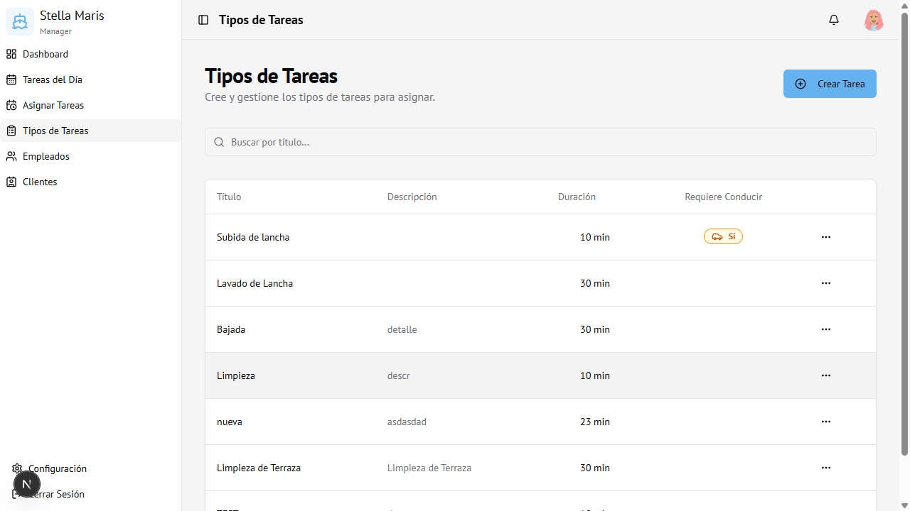
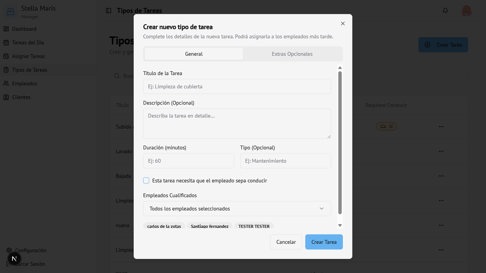

Módulo 04
Tipos de Tareas
Plantillas de trabajo que se usan al asignar tareas a los empleados.
Vista general
Aquí se definen los tipos de tarea disponibles en el sistema. Estas plantillas son las que luego se usan al asignar trabajo a los empleados.

Crear un nuevo tipo de tarea
- Hacer clic en Crear Tarea (arriba a la derecha)
- Se abre el formulario de creación

Pestaña General
| Campo | Obligatorio | Descripción |
|---|---|---|
| Título de la Tarea | Sí | Nombre que identifica el tipo de tarea (ej: "Bajada de lancha") |
| Descripción | No | Detalle adicional de la tarea |
| Duración (minutos) | Sí | Tiempo estimado para completarla |
| Tipo | No | Categoría libre (ej: "Mantenimiento", "Operativo") |
| Requiere conducir | No | Marcar si el empleado debe saber conducir |
| Empleados Cualificados | No | Qué empleados pueden realizar esta tarea. Por defecto: todos |
Pestaña Extras Opcionales
Permite agregar ítems adicionales con precio que se pueden incluir al asignar la tarea.
| Campo | Descripción |
|---|---|
| Nombre del extra | Ej: "Nafta", "Aceite" |
| Precio (AR$) | Precio unitario (opcional) |
Para agregar un extra: clic en + Agregar Extra
Para eliminar: clic en el ícono de papelera
- Hacer clic en Crear Tarea para guardar
Editar un tipo de tarea
- En la tabla, hacer clic en los tres puntos (···) de la fila
- Seleccionar Editar
- Modificar los campos necesarios
- Hacer clic en Guardar Cambios
Eliminar un tipo de tarea
- En la tabla, hacer clic en los tres puntos (···)
- Seleccionar Eliminar
- Confirmar en el diálogo de alerta
Atención: Esta acción no se puede deshacer. Si la tarea tiene asignaciones activas, se recomienda cancelarlas antes de eliminar el tipo.
Buscar una tarea
Usar el campo de búsqueda para filtrar por título.
Acceso
Solo visible para Administrador.
Ruta:
Ruta:
/tasks